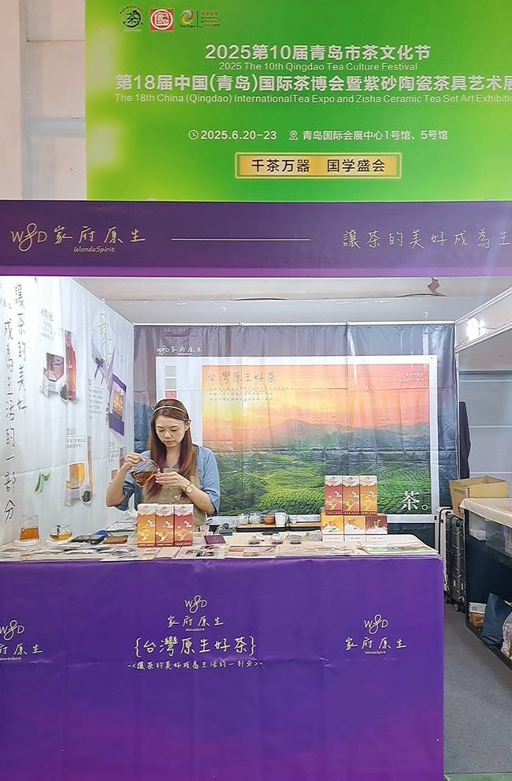
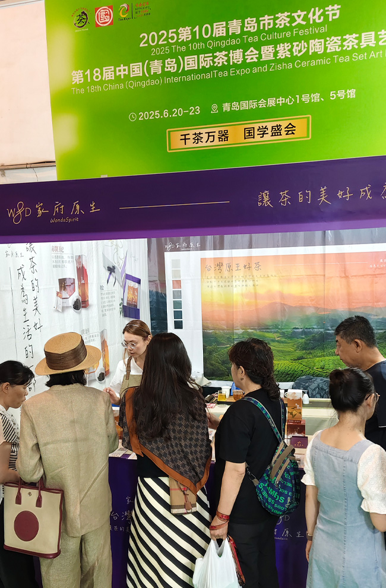

WondiSpirit
讓茶的美好
成為生活的一部分
WondiSpirit
讓茶的香氣
充滿生活的每一刻
WondiSpirit
讓愛與溫情
在每一杯茶中流淌
透過我們的茶葉
您將品味到一份與世無爭的寧靜
追求著不僅是味覺的滿足
更是心靈的寧靜
每一杯茶
都是一段心靈旅程
在寧靜中尋找生活的意義。
品味自然之美
探索
WondiSpirit
的世界
在這個繁忙的現代生活中，我們時常迷失於城市的喧囂，忘卻了大自然的美好。然而，
WondiSpirit
的茶香卻如一縷清風，帶領我們重新感受自然之美。每一杯
WondiSpirit
的茶，都是一段回歸自然的旅程，讓我們遠離塵囂，重拾內心的寧靜。
尋找心靈的療癒
探索
WondiSpirit
茶的溫暖力量
在這個快節奏的生活中，我們時常感受到心靈的疲憊和渴望。然而，
WondiSpirit
的茶葉卻如一縷陽光，溫暖著我們的心靈。每一口
WondiSpirit
的茶，都是一種心靈的療癒，讓我們放鬆身心，尋找內心的平靜與滿足。
WondiSpirit
讓茶品成就生活的詩篇
WondiSpirit的使命是為人們帶來身心健康和生活品質的提升。我們相信，茶葉不僅是一種飲品，更是一種療癒和滋養的力量。
希望從視覺、聽覺與觸覺等感官路徑，將茶葉的美好帶給更多的人，讓每個人都能享受到沏茶所帶來的愉悅和寧靜，亦能感受到這一路來，茶為我帶來的平靜，於我疲憊時為我添足的能量。
WondiSpirit
品牌的精神
我們致力於與茶相關的任務，除了嚴選好茶提供給客戶，也持續地尋求具備友善栽植概念的、對茶文化理解且願意帶給人們身心靈療癒意義的茶農一同合作。
TEA
靜謐品味
烏間琥珀
琥珀濃香，品味焙火烏龍的獨特韻味，這款深色的烏龍茶如同翠綠叢中藏著的琥珀。
烏間金川
這款烏龍茶清新淡雅，帶來輕柔的口感與細膩的香氣，是一種讓人心曠神怡的茶飲選擇。
茶境間
擁有兩種不同風味禮盒，層次豐富，焙火醇厚香，是一次擁有多重風味的烏龍茶品禮盒。
烏間琥珀
琥珀濃香，品味焙火烏龍的獨特韻味，將自然之美注入每一杯茶中。
烏間金川
清新烏龍，完美融合你的日常時刻，將自然之美注入每一杯茶中。
赤間玉妃
獨特醇香，享受極致紅茶的品味之旅，將自然之美注入每一杯茶中。
赤間玉妃
這款紅茶口感濃厚柔和，伴隨著木香的回甘，醇厚而不失細膩，帶來溫暖舒適的享受。
2025 第18屆青島國際茶博會暨紫砂陶瓷茶具藝術展


2024 上海國際茶博會
2024 南京國際茶博會
2024 上海禪藝生活暨茶生活博覽會
追尋自然，品味生活
如果有任何關於產品的需求或問題，歡迎來電諮詢或利用我們的線上服務聯繫我們，我們會有專人盡速回覆您的問題。
LINE
Wechat
Instagram
Email
Copyright © 2024 家府原生 All Rights Reserved.